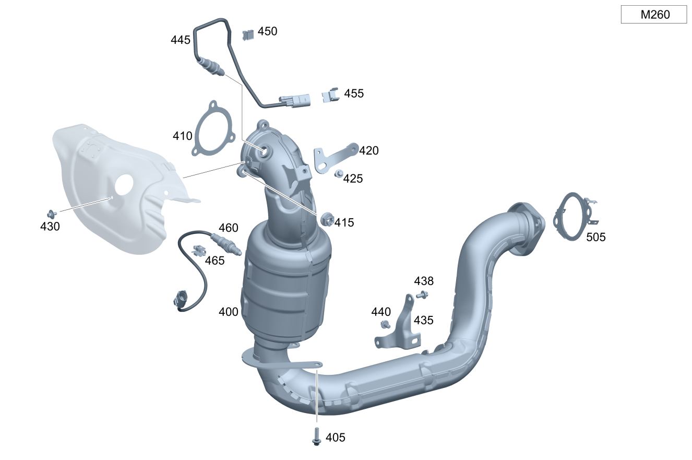

| № | Артикул | Название | Кол. | Примечание | Ограничение |
|---|---|---|---|---|---|
| 400 | A 247 490 58 02 | Трубопровод ОГ пер. (EXHAUST GAS LINE, FRONT) | 1 | Спереди [697] ДЕТАЛЬ ПОСТАВЛЯЕТСЯ ТОЛЬКО/ИЛИ ТАКЖЕ КАК ЗАП.ЧАСТЬ | M260 |
| 400 | A 247 490 94 00 | Трубопровод ОГ пер. (EXHAUST GAS LINE, FRONT) | 1 | Спереди [697] ДЕТАЛЬ ПОСТАВЛЯЕТСЯ ТОЛЬКО/ИЛИ ТАКЖЕ КАК ЗАП.ЧАСТЬ | M260+(498/945)+M005 |
| 400 | A 247 490 71 00 | Трубопровод ОГ пер. (EXHAUST GAS LINE, FRONT) | 1 | Спереди [697] ДЕТАЛЬ ПОСТАВЛЯЕТСЯ ТОЛЬКО/ИЛИ ТАКЖЕ КАК ЗАП.ЧАСТЬ | M260+(460/494/835)+M005 |
| 400 | A 247 490 59 02 | Трубопровод ОГ пер. (EXHAUST GAS LINE, FRONT) | 1 | Спереди [697] ДЕТАЛЬ ПОСТАВЛЯЕТСЯ ТОЛЬКО/ИЛИ ТАКЖЕ КАК ЗАП.ЧАСТЬ | M260+(M005+(961/999)/M005) |
| 400 | A 247 490 59 02 | Трубопровод ОГ пер. (EXHAUST GAS LINE, FRONT) | 1 | Спереди [697] ДЕТАЛЬ ПОСТАВЛЯЕТСЯ ТОЛЬКО/ИЛИ ТАКЖЕ КАК ЗАП.ЧАСТЬ | M260+M005 |
| 400 | A 247 490 95 00 | Трубопровод ОГ пер. (EXHAUST GAS LINE, FRONT) | 1 | Спереди [697] ДЕТАЛЬ ПОСТАВЛЯЕТСЯ ТОЛЬКО/ИЛИ ТАКЖЕ КАК ЗАП.ЧАСТЬ | M260+AA7+945 |
| 400 | A 247 490 59 02 | Трубопровод ОГ пер. (EXHAUST GAS LINE, FRONT) | 1 | Спереди [697] ДЕТАЛЬ ПОСТАВЛЯЕТСЯ ТОЛЬКО/ИЛИ ТАКЖЕ КАК ЗАП.ЧАСТЬ | M260+AA7+498 |
| 400 | A 247 490 72 00 | Трубопровод ОГ пер. (EXHAUST GAS LINE, FRONT) | 1 | Спереди [697] ДЕТАЛЬ ПОСТАВЛЯЕТСЯ ТОЛЬКО/ИЛИ ТАКЖЕ КАК ЗАП.ЧАСТЬ | M260+AA7+(460/494/835) |
| 400 | A 247 490 59 02 | Трубопровод ОГ пер. (EXHAUST GAS LINE, FRONT) | 1 | Спереди [697] ДЕТАЛЬ ПОСТАВЛЯЕТСЯ ТОЛЬКО/ИЛИ ТАКЖЕ КАК ЗАП.ЧАСТЬ | M260+AA7 |
| 400 | A 247 490 65 03 | Трубопровод ОГ пер. (EXHAUST GAS LINE, FRONT) | 1 | Спереди [697] ДЕТАЛЬ ПОСТАВЛЯЕТСЯ ТОЛЬКО/ИЛИ ТАКЖЕ КАК ЗАП.ЧАСТЬ | M260+9U8+B01+3S1 |
| 400 | A 247 490 98 03 | Трубопровод ОГ пер. (EXHAUST GAS LINE, FRONT) | 1 | Спереди [697] ДЕТАЛЬ ПОСТАВЛЯЕТСЯ ТОЛЬКО/ИЛИ ТАКЖЕ КАК ЗАП.ЧАСТЬ | M260+9U8+B01+4S1 |
| 400 | A 247 490 04 05 | Трубопровод ОГ пер. (EXHAUST GAS LINE, FRONT) | 1 | Спереди [697] ДЕТАЛЬ ПОСТАВЛЯЕТСЯ ТОЛЬКО/ИЛИ ТАКЖЕ КАК ЗАП.ЧАСТЬ | M260+9U8+B01+3S6 |
| 405 | N 000000 000276 | Винт с 6-гр. глвк (HEXALOBULAR SCREW) | 2 | Выпускная система к блоку цилиндров; M8X20 | M260 |
| 405 | N 000000 000276 | Винт с 6-гр. глвк (HEXALOBULAR SCREW) | 1 | Выпускная система к блоку цилиндров; M8X20 | M260+9U8+B01 |
| 410 | A 260 142 23 00 | Полуметал. уплотнение (METAL-SOFT-MATERIAL SEAL) | 1 | Между турбокомпрессором и выпускной трубой | M260 |
| 415 | A 002 990 39 50 | Гайка с фланцем (HEXAGON NUT WITH FLANGE) | 3 | Выпускная система к турбокомпрессору | M260 |
| 420 | A 247 492 18 00 | Держатель (HOLDER) | 1 | К трубопроводу ОГ | M260 |
| 420 | A 247 492 42 00 | Держатель (HOLDER) | 1 | К трубопроводу ОГ | M260+9U8+B01 |
| 425 | A 000 990 67 03 | Винт Torx External (HEXALOBULAR HEAD SCREW) | 2 | Держатель к трубопроводу ОГ; M8X20 | M260/M260+9U8+B01 |
| 430 | A 002 990 26 03 | Винт с неспадающей шайбой (SCREW W WASHER ASSEMBLY) | 3 | Крепление экрана турбонагнетателя | M260/M260+9U8+B01 |
| 435 | A 247 492 19 00 | Держатель (HOLDER) | 1 | Трубопровод ОГ спереди к масляному поддону | M260/M260+9U8+B01 |
| 438 | N 910105 008008 | Винт с 6-гранной головкой (HEXAGON HEAD BOLT) | 2 | Трубопровод ОГ спереди к масляному поддону; M8X16 | M260/M260+9U8+B01 |
| 440 | A 094 990 46 00 | Винт Torx External (HEXALOBULAR HEAD SCREW) | 1 | Держатель к трубопроводу ОГ; M8X15 | M260/M260+9U8+B01 |
| 445 | A 000 542 24 04 | Лямбда-зонд (LAMBDA SENSOR) | 1 | перед каталитическим нейтрализатором ОГ | M260 |
| 445 | A 000 542 58 12 | Лямбда-зонд (LAMBDA SENSOR) | 1 | перед каталитическим нейтрализатором ОГ | M260 |
| 445 | A 000 542 87 11 | Лямбда-зонд (LAMBDA SENSOR) | 1 | перед каталитическим нейтрализатором ОГ | M260+9U8+B01 |
| 445 | A 000 542 63 12 | Лямбда-зонд (LAMBDA SENSOR) | 1 | перед каталитическим нейтрализатором ОГ | M260+9U8+B01 |
| 450 | A 000 541 01 40 | Держатель (HOLDER) | 1 | Провод датчика кислорода на трубопроводе охлаждающей жидкости; 18 X 24 MM | M260 |
| 450 | A 000 541 01 40 | Держатель (HOLDER) | 2 | Провод датчика кислорода на трубопроводе охлаждающей жидкости; 18 X 24 MM | M260+AA7 |
| 450 | A 000 541 01 40 | Держатель (HOLDER) | 1 | Провод датчика кислорода на трубопроводе охлаждающей жидкости; 18 X 24 MM | M260+(AA7+9U8+B01/9U8+B01) |
| 455 | A 004 991 37 70 | Крепежная скоба (FASTENING CLIP) | 1 | Провод датчика кислорода на наддувочном воздуховоде | M260/M260+9U8+B01 |
| 460 | A 000 542 81 04 | Лямбда-зонд (LAMBDA SENSOR) | 1 | После катализатора | M260 |
| 460 | A 000 542 20 12 | Лямбда-зонд (LAMBDA SENSOR) | 1 | После катализатора [429] ДЕТАЛЬ, СВЯЗАННАЯ С ПРОТИВОУГОННОЙ БЕЗОПАСНОСТЬЮ | M260+9U8+B01 |
| 460 | A 000 542 59 12 | Лямбда-зонд (LAMBDA SENSOR) | 1 | После катализатора | M260+9U8+B01 |
| 465 | A 207 545 16 40 | Держатель (HOLDER) | 1 | Провод лямбда\-зонда к блоку цилиндров | M260+9U8+B01 |
| 465 | A 094 159 02 00 | Держатель (HOLDER) | 1 | Провод лямбда\-зонда к блоку цилиндров | M260 |
| 465 | A 000 541 01 40 | Держатель (HOLDER) | 2 | Провод лямбда\-зонда к блоку цилиндров; 18 X 24 MM | M260+9U8+B01 |
| 470 | A 000 995 50 33 | Проф. хомут сист. вып. ОГ (PROFILE CLAMP, EXH. SYS.) | 1 | Между турбокомпрессором и выпускной трубой | M260+9U8+B01 |
| 475 | A 256 142 03 80 | Полуметал. уплотнение (METAL-SOFT-MATERIAL SEAL) | 1 | Между турбокомпрессором и выпускной трубой | M260+9U8+B01 |
| 480 | A 000 905 94 11 | Датчик температуры (TEMPERATURE SENSOR) | 1 | M260+9U8 | |
| 480 | A 000 905 94 14 | Датчик температуры (TEMPERATURE SENSOR) | 1 | M260+9U8 | |
| 480 | A 000 905 28 17 | Датчик температуры (TEMPERATURE SENSOR) | 1 | M260+9U8+700 | |
| 500 | A 177 490 44 01 | Система выпуска ОГ (EXHAUST SYSTEM) | 1 | Посередине | (M260+B01)+(M005/916) |
| 500 | A 177 490 44 01 | Система выпуска ОГ (EXHAUST SYSTEM) | 1 | Посередине | M260+(M005/916) |
| 500 | A 177 490 03 03 | Система выпуска ОГ (EXHAUST SYSTEM) | 1 | Посередине | M260+(M005/916)+(598/961) |
| 500 | A 177 490 11 04 | Система выпуска ОГ (EXHAUST SYSTEM) | 1 | Посередине | M260+(M005/916)+999 |
| 500 | A 247 490 37 05 | Система выпуска ОГ | 1 | Посередине | M260+(M005/916)+598+700 |
| 500 | A 177 490 44 04 | Система выпуска ОГ (EXHAUST SYSTEM) | 1 | Посередине | M260+9U8+(M005/916)+964 |
| 500 | A 247 490 69 05 | Система выпуска ОГ (EXHAUST SYSTEM) | 1 | Посередине | M260+9U8+(M005/916)+4S7 |
| 500 | A 177 490 44 01 | Система выпуска ОГ (EXHAUST SYSTEM) | 1 | Посередине | M260+9U8+(M005/916)+4S6 |
| 505 | A 177 492 04 00 | Многоканальное уплотнение (MULTI-HOLE SEAL) | 1 | Выпускная труба спереди к выпускной трубе посередине | M260/M282 |
| 505 | A 177 492 04 00 | Многоканальное уплотнение (MULTI-HOLE SEAL) | 1 | Выпускная труба спереди к выпускной трубе посередине | M260+9U8 |
| 510 | A 247 490 91 03 | Система выпуска ОГ (EXHAUST SYSTEM) | 1 | Сзади [402] БОЛЬШЕ НЕ ПОСТАВЛЯЕТСЯ | M260+(M005/916)+(U55/U55+999)+B01 |
| 510 | A 247 490 57 01 | Система выпуска ОГ (EXHAUST SYSTEM) | 1 | Сзади | M260+(M005/916)+(U55/U55+(598+-700/961+-700/999))+-(M016/1S6) |
| 510 | A 247 490 84 04 | Система выпуска ОГ (EXHAUST SYSTEM) | 1 | Сзади | M260+(M005/916)+(U55/U55+(598+-700/961+-700/999))+-(M016/1S6) |
| 510 | A 247 490 84 04 | Система выпуска ОГ (EXHAUST SYSTEM) | 1 | Сзади | M260+(M005/916)+-1S6/M260+(M005/916)+(598+-700/961+-700/999)+-1S6 |
| 510 | A 247 490 58 01 | Система выпуска ОГ (EXHAUST SYSTEM) | 1 | Сзади | M260+(U55/U55+(598+-700/961+-700/999))+-1S6 |
| 510 | A 247 490 85 04 | Система выпуска ОГ (EXHAUST SYSTEM) | 1 | Сзади | M260+(U55/U55+(598+-700/961+-700/999))+-1S6 |
| 510 | A 247 490 14 06 | Система выпуска ОГ | 1 | Сзади | M260+(M005/916)+(598/961)+700+-1S6 |
| 510 | A 247 490 51 05 | Система выпуска ОГ (EXHAUST SYSTEM) | 1 | Сзади | M260+(M005/916)+1S6 |
| 510 | A 247 490 91 03 | Система выпуска ОГ (EXHAUST SYSTEM) | 1 | Сзади [402] БОЛЬШЕ НЕ ПОСТАВЛЯЕТСЯ | (M260/M260+964)+(M005/916)+9U8 |
| 510 | A 247 490 51 05 | Система выпуска ОГ (EXHAUST SYSTEM) | 1 | Сзади | M260+9U8+(M005/916)+(4S6/4S7) |
| 510 | A 247 490 14 06 | Система выпуска ОГ | 1 | Сзади | M260+9U8+(M005/916)+(4S6/4S7)+700 |
| 512 | A 222 906 74 03 | - Исполнительный элемент (ACTUATOR COMPONENT) | 1 | Сзади справа | M260 |
| 514 | N 913023 005002 | - Гайка (NUT) | 3 | Крепление исполнительного элемента; M5 | M260 |
| 520 | A 000 995 47 02 | Трубн. хомут сист.вып. ОГ (PIPE CLAMP, EXHAUST SYS.) | 1 | Выпускная труба спереди к выпускной трубе сзади; Ø 65 MM | M260 |
| 530 | A 000 990 68 03 | Винт Torx External (HEXALOBULAR HEAD SCREW) | 2 | Передняя часть выпускной системы к средней части выпускной системы; M8X25 | M260/M282/M654 |
| 540 | A 247 492 02 00 | Держатель (HOLDER) | 1 | Выпускная система спереди | (M260/M282/M608/M654) |
| 540 | A 247 492 40 00 | Держатель (HOLDER) | 1 | Выпускная система спереди | (M260/M282/M654) |
| 545 | N 000000 003175 | Гайка (NUT) | 2 | Выпускная труба (передняя) к интегральной балке; M8 | |
| 545 | N 000000 008303 | Шестигранная гайка (HEXAGON NUT) | 2 | Выпускная труба (передняя) к интегральной балке; M8 | |
| 555 | N 910143 010011 | Винт с 6-гр. глвк (HEXALOBULAR SCREW) | 2 | Держатель глушителя к раме; M10X20\-10.9 | |
| 570 | N 000000 000276 | Винт с 6-гр. глвк (HEXALOBULAR SCREW) | 2 | Выпускная система к кузову; M8X20 | M282/M260 |
| 570 | N 910143 008003 | Винт с 6-гр. глвк (HEXALOBULAR SCREW) | 2 | Выпускная система к кузову; M8X30 | M282/M260 |
| 575 | A 247 492 04 00 | Держатель (HOLDER) | 2 | Выпускная система сзади | (M260/M282) |
| 580 | A 231 492 00 44 | Подвес трубопровода ОГ (SUSPENSION, EXH. GAS LINE) | 2 | Выпускная система сзади | (M260/M282) |
| 593 | N 000000 008303 | - Шестигранная гайка (HEXAGON NUT) | 1 | Крепление держателя; M8 | (M260/M282/M654) |
| 595 | A 247 492 14 00 | - Держатель (HOLDER) | 1 | Выпускная система посередине | (M260/M282/M654) |
| 598 | A 247 492 03 00 | - Держатель (HOLDER) | 1 | Выпускная система посередине | M260 |
| 600 | A 000 905 76 09 | Датчик температуры (TEMPERATURE SENSOR) | 1 | M260+(598/961/999) | |
| 600 | A 000 905 97 11 | Датчик температуры (TEMPERATURE SENSOR) | 1 | M260+(598/961/999) | |
| 600 | A 000 905 97 11 | Датчик температуры (TEMPERATURE SENSOR) | 1 | M260+9U8+B01+(961/964/999/4S7)/M260+9U8+(999/4S7) | |
| 605 | A 000 541 01 40 | Держатель (HOLDER) | 1 | Крепление провода датчика температуры; 18 X 24 MM | M260+(598/961/999)+(809/800/801)/M260+(925/959/964) |
| 605 | A 000 541 04 00 | Держатель (HOLDER) | 1 | Крепление провода датчика температуры | ((M260/M282)+(598/961/999/4S7))+-(809/800/801) |
| 605 | A 000 541 04 00 | Держатель (HOLDER) | 1 | Крепление провода датчика температуры | ((M260/M282)+(598/961/999/4S7)/M260+9U8+4S7)+-(809/800/801) |
| 610 | A 247 492 47 00 | Держатель (HOLDER) | 1 | Датчик оксидов азота | (M260/M282)+(598/961/999/964)/M654+971 |
| 610 | A 247 492 47 00 | Держатель (HOLDER) | 1 | Датчик оксидов азота | (M260/M282)+(598/961/999/964)/M654+971 |
| 610 | A 247 492 47 00 | Держатель (HOLDER) | 1 | Датчик оксидов азота | (M260/M282)+(598/961/999/4S7)/M654+971 |
| 610 | A 247 492 47 00 | Держатель (HOLDER) | 1 | Датчик оксидов азота | (M260/M282)+(598/961/999/4S7)/M260+9U8+4S7/M654+971 |
| 610 | A 247 492 47 00 | Держатель (HOLDER) | 1 | Датчик оксидов азота | (M260/M282)+4S7/M260+9U8+4S7/M654+971 |
| 610 | A 247 492 47 00 | Держатель (HOLDER) | 1 | Датчик оксидов азота | M260+9U8+B01+(961/964/999/4S7) |
| 615 | A 202 990 03 17 | Винт с шестигр. головкой (HEXAGON HEAD SCREW) | 2 | Крепление кронштейна датчика NOX; M6X19 | M260+(598/925/959/961/999) |
| 615 | A 202 990 03 17 | Винт с шестигр. головкой (HEXAGON HEAD SCREW) | 2 | Крепление кронштейна датчика NOX; M6X19 | M260+(598/961/964/999) |
| 615 | A 202 990 03 17 | Винт с шестигр. головкой (HEXAGON HEAD SCREW) | 2 | Крепление кронштейна датчика NOX; M6X19 | M260+(598/961/964/999) |
| 615 | A 202 990 03 17 | Винт с шестигр. головкой (HEXAGON HEAD SCREW) | 2 | Крепление кронштейна датчика NOX; M6X19 | M260+(598/961/999)/M260+9U8+4S7 |
| 615 | A 202 990 03 17 | Винт с шестигр. головкой (HEXAGON HEAD SCREW) | 2 | Крепление кронштейна датчика NOX; M6X19 | M260+(598/999)/M260+9U8+4S7 |
| 615 | A 202 990 03 17 | Винт с шестигр. головкой (HEXAGON HEAD SCREW) | 2 | Крепление кронштейна датчика NOX; M6X19 | M260+9U8+4S7 |
| 615 | A 202 990 03 17 | Винт с шестигр. головкой (HEXAGON HEAD SCREW) | 2 | Крепление кронштейна датчика NOX; M6X19 | M260+9U8+B01+(961/964/999/4S7) |
| 618 | A 202 990 03 17 | Винт с шестигр. головкой (HEXAGON HEAD SCREW) | 2 | Крепление кронштейна датчика NOX; M6X19 | (M260/M282)+(598/961/999/964)/M654+971 |
| 618 | A 202 990 03 17 | Винт с шестигр. головкой (HEXAGON HEAD SCREW) | 2 | Крепление кронштейна датчика NOX; M6X19 | (M260/M282)+(598/961/999/964)/M654+971 |
| 618 | A 202 990 03 17 | Винт с шестигр. головкой (HEXAGON HEAD SCREW) | 2 | Крепление кронштейна датчика NOX; M6X19 | (M260/M282)+(598/961/999/4S7)/M654+971 |
| 618 | A 202 990 03 17 | Винт с шестигр. головкой (HEXAGON HEAD SCREW) | 2 | Крепление кронштейна датчика NOX; M6X19 | (M260/M282)+(598/961/999/4S7)/M260+9U8+4S7/M654+971 |
| 618 | A 202 990 03 17 | Винт с шестигр. головкой (HEXAGON HEAD SCREW) | 2 | Крепление кронштейна датчика NOX; M6X19 | (M260/M282)+4S7/M260+9U8+4S7/M654+971 |
| 618 | A 202 990 03 17 | Винт с шестигр. головкой (HEXAGON HEAD SCREW) | 2 | Крепление кронштейна датчика NOX; M6X19 | M260+9U8+B01+(961/964/999/4S7) |
| 640 | A 177 159 21 00 | Держатель (HOLDER) | 1 | Держатель датчика температуры | M260+(598/925/959/961/964/999) |
| 640 | A 177 159 21 00 | Держатель (HOLDER) | 1 | Держатель датчика температуры | M260+(598/961/999)/M260+9U8+4S7 |
| 640 | A 177 159 21 00 | Держатель (HOLDER) | 1 | Держатель датчика температуры | M260+(598/999)/M260+9U8+4S7 |
| 640 | A 177 159 21 00 | Держатель (HOLDER) | 1 | Держатель датчика температуры | M260+9U8+4S7 |
| 640 | A 177 159 21 00 | Держатель (HOLDER) | 1 | Держатель датчика температуры | M260+9U8+B01+(961/964/999/4S7) |
| 650 | A 247 492 43 00 | Шланг выпускной системы (EXHAUST GAS HOSE) | 1 | После катализатора | (M260/M282)+(598/961/999)+(801+051/802/803) |
| 650 | A 247 492 43 00 | Шланг выпускной системы (EXHAUST GAS HOSE) | 1 | После катализатора | (M260/M282)+(598/961/999) |
| 650 | A 247 492 43 00 | Шланг выпускной системы (EXHAUST GAS HOSE) | 1 | После катализатора | (M260/M282)+(598/961/999) |
| 650 | A 247 492 43 00 | Шланг выпускной системы (EXHAUST GAS HOSE) | 1 | После катализатора | (M260/M282)+(598/961/999)+(801+051/802/803)+830 |
| 650 | A 247 492 43 00 | Шланг выпускной системы (EXHAUST GAS HOSE) | 1 | После катализатора | (M260/M282)+(598/961/999)+830 |
| 650 | A 247 492 43 00 | Шланг выпускной системы (EXHAUST GAS HOSE) | 1 | После катализатора | (M260/M282)+(598/961/999)+830 |
| 650 | A 247 492 43 00 | Шланг выпускной системы (EXHAUST GAS HOSE) | 1 | После катализатора | (M260/M282)+4S7 |
| 650 | A 247 492 44 00 | Шланг выпускной системы (EXHAUST GAS HOSE) | 1 | После катализатора | M260+9U8+964 |
| 650 | A 247 492 44 00 | Шланг выпускной системы (EXHAUST GAS HOSE) | 1 | После катализатора | M260+9U8+(964/999) |
| 650 | A 247 492 44 00 | Шланг выпускной системы (EXHAUST GAS HOSE) | 1 | После катализатора | M260+9U8+(964/999) |
| 650 | A 247 492 44 00 | Шланг выпускной системы (EXHAUST GAS HOSE) | 1 | После катализатора | M260+9U8+4S7 |
| 650 | A 247 492 43 00 | Шланг выпускной системы (EXHAUST GAS HOSE) | 1 | После катализатора | (M260/M282)+(598/961/999/4S7) |
| 650 | A 247 492 43 00 | Шланг выпускной системы (EXHAUST GAS HOSE) | 1 | После катализатора | (M260/M282)+4S7 |
| 650 | A 247 492 43 00 | Шланг выпускной системы (EXHAUST GAS HOSE) | 1 | После катализатора | (M260/M282)+(598/961/999/4S7)+830 |
| 650 | A 247 492 43 00 | Шланг выпускной системы (EXHAUST GAS HOSE) | 1 | После катализатора | (M260/M282)+4S7+830 |
| 660 | A 247 492 26 00 | Шланг выпускной системы (EXHAUST GAS HOSE) | 1 | перед каталитическим нейтрализатором ОГ | (M260/M282)+(598/961/999) |
| 660 | A 247 492 26 00 | Шланг выпускной системы (EXHAUST GAS HOSE) | 1 | перед каталитическим нейтрализатором ОГ | (M260/M282)+(598/961/964/999) |
| 660 | A 247 492 26 00 | Шланг выпускной системы (EXHAUST GAS HOSE) | 1 | перед каталитическим нейтрализатором ОГ | (M260/M282)+964 |
| 660 | A 247 492 26 00 | Шланг выпускной системы (EXHAUST GAS HOSE) | 1 | перед каталитическим нейтрализатором ОГ | (M260/M282)+(598/961/999)+830 |
| 660 | A 247 492 26 00 | Шланг выпускной системы (EXHAUST GAS HOSE) | 1 | перед каталитическим нейтрализатором ОГ | (M260/M282)+(598/961/964/999)+830 |
| 660 | A 247 492 26 00 | Шланг выпускной системы (EXHAUST GAS HOSE) | 1 | перед каталитическим нейтрализатором ОГ | (M260/M282)+964+830 |
| 660 | A 247 492 44 00 | Шланг выпускной системы (EXHAUST GAS HOSE) | 1 | перед каталитическим нейтрализатором ОГ | (M260/M282)+(598/961/999) |
| 660 | A 247 492 44 00 | Шланг выпускной системы (EXHAUST GAS HOSE) | 1 | перед каталитическим нейтрализатором ОГ | (M260/M282)+(598/961/999) |
| 660 | A 247 492 44 00 | Шланг выпускной системы (EXHAUST GAS HOSE) | 1 | перед каталитическим нейтрализатором ОГ | (M260/M282)+(598/961/999)+(801+051/802/803)+830 |
| 660 | A 247 492 44 00 | Шланг выпускной системы (EXHAUST GAS HOSE) | 1 | перед каталитическим нейтрализатором ОГ | (M260/M282)+(598/961/999)+830 |
| 660 | A 247 492 44 00 | Шланг выпускной системы (EXHAUST GAS HOSE) | 1 | перед каталитическим нейтрализатором ОГ | (M260/M282)+(598/961/999)+830 |
| 660 | A 247 492 44 00 | Шланг выпускной системы (EXHAUST GAS HOSE) | 1 | перед каталитическим нейтрализатором ОГ | (M260/M282)+4S7 |
| 660 | A 247 492 43 00 | Шланг выпускной системы (EXHAUST GAS HOSE) | 1 | перед каталитическим нейтрализатором ОГ | M260+9U8+964 |
| 660 | A 247 492 43 00 | Шланг выпускной системы (EXHAUST GAS HOSE) | 1 | перед каталитическим нейтрализатором ОГ | M260+9U8+(964/999) |
| 660 | A 247 492 43 00 | Шланг выпускной системы (EXHAUST GAS HOSE) | 1 | перед каталитическим нейтрализатором ОГ | M260+9U8+(964/999) |
| 660 | A 247 492 43 00 | Шланг выпускной системы (EXHAUST GAS HOSE) | 1 | перед каталитическим нейтрализатором ОГ | M260+9U8+4S7 |
| 660 | A 247 492 44 00 | Шланг выпускной системы (EXHAUST GAS HOSE) | 1 | перед каталитическим нейтрализатором ОГ | (M260/M282)+(598/961/999/4S7) |
| 660 | A 247 492 44 00 | Шланг выпускной системы (EXHAUST GAS HOSE) | 1 | перед каталитическим нейтрализатором ОГ | (M260/M282)+4S7 |
| 660 | A 247 492 44 00 | Шланг выпускной системы (EXHAUST GAS HOSE) | 1 | перед каталитическим нейтрализатором ОГ | (M260/M282)+(598/961/999/4S7)+830 |
| 660 | A 247 492 44 00 | Шланг выпускной системы (EXHAUST GAS HOSE) | 1 | перед каталитическим нейтрализатором ОГ | (M260/M282)+4S7+830 |
| 670 | A 140 995 04 05 | Пружинный хомут (SPRING HOSE CLAMP) | 2 | Шланги системы выпуска ОГ к каталитическому нейтрализатору ОГ; 14/12 MM | (M260/M282)+(598/961/999) |
| 670 | A 140 995 04 05 | Пружинный хомут (SPRING HOSE CLAMP) | 2 | Шланги системы выпуска ОГ к каталитическому нейтрализатору ОГ; 14/12 MM | (M260/M282)+(598/961/999)+830 |
| 670 | A 140 995 04 05 | Пружинный хомут (SPRING HOSE CLAMP) | 2 | Шланги системы выпуска ОГ к каталитическому нейтрализатору ОГ; 14/12 MM | (M260/M282)+4S7 |
| 670 | A 004 997 20 90 | Хомут для шланга (HOSE CLAMP) | 2 | Шланги системы выпуска ОГ к каталитическому нейтрализатору ОГ; 14.5\-15.5 MM | (M260/M282)+(598/961/999/4S7)+830 |
| 670 | A 004 997 20 90 | Хомут для шланга (HOSE CLAMP) | 2 | Шланги системы выпуска ОГ к каталитическому нейтрализатору ОГ; 14.5\-15.5 MM | (M260/M282)+(598/961/999/4S7)+700 |
| 670 | A 140 995 04 05 | Пружинный хомут (SPRING HOSE CLAMP) | 2 | Шланги системы выпуска ОГ к каталитическому нейтрализатору ОГ; 14/12 MM | (M260/M282)+(598/961/999/4S7) |
| 670 | A 140 995 04 05 | Пружинный хомут (SPRING HOSE CLAMP) | 2 | Шланги системы выпуска ОГ к каталитическому нейтрализатору ОГ; 14/12 MM | (M260/M282)+4S7 |
| 670 | A 140 995 04 05 | Пружинный хомут (SPRING HOSE CLAMP) | 2 | Шланги системы выпуска ОГ к каталитическому нейтрализатору ОГ; 14/12 MM | (M260/M282)+(598/961/999/4S7)+830 |
| 680 | A 140 995 04 05 | Пружинный хомут (SPRING HOSE CLAMP) | 2 | Шланги системы выпуска ОГ к датчику давления; 14/12 MM | (M260/M282)+4S7 |
| 680 | A 004 997 20 90 | Хомут для шланга (HOSE CLAMP) | 2 | Шланги системы выпуска ОГ к датчику давления; 14.5\-15.5 MM | (M260/M282)+(598/961/999/4S7)+830 |
| 680 | A 004 997 20 90 | Хомут для шланга (HOSE CLAMP) | 2 | Шланги системы выпуска ОГ к датчику давления; 14.5\-15.5 MM | (M260/M282)+(598/961/999/4S7)+700 |
| 680 | A 004 997 20 90 | Хомут для шланга (HOSE CLAMP) | 2 | Шланги системы выпуска ОГ к датчику давления; 14.5\-15.5 MM | (M260/M282)+4S7+700 |
| 680 | A 140 995 04 05 | Пружинный хомут (SPRING HOSE CLAMP) | 2 | Шланги системы выпуска ОГ к датчику давления; 14/12 MM | (M260/M282)+4S7 |
| 680 | A 140 995 04 05 | Пружинный хомут (SPRING HOSE CLAMP) | 2 | Шланги системы выпуска ОГ к датчику давления; 14/12 MM | (M260/M282)+(598/961/999/964/4S7) |
| 680 | A 004 997 20 90 | Хомут для шланга (HOSE CLAMP) | 2 | Шланги системы выпуска ОГ к датчику давления; 14.5\-15.5 MM | (M260/M282)+(598/961/999/964/4S7) |
| 680 | A 140 995 04 05 | Пружинный хомут (SPRING HOSE CLAMP) | 2 | Шланги системы выпуска ОГ к датчику давления; 14/12 MM | (M260/M282)+(598/961/999/4S7)+830 |
| 680 | A 004 997 20 90 | Хомут для шланга (HOSE CLAMP) | 2 | Шланги системы выпуска ОГ к датчику давления; 14.5\-15.5 MM | (M260/M282)+(598/961/999/4S7)+830 |
| 685 | A 177 491 39 00 | Напорный трубопровод (PRESSURE LINE) | 1 | Перед сажевым фильтром | (M260/M282)+(598/961/999/4S7) |
| 685 | A 177 491 39 00 | Напорный трубопровод (PRESSURE LINE) | 1 | Перед сажевым фильтром | (M260/M282)+9U8+4S7 |
| 690 | A 177 491 40 00 | Напорный трубопровод (PRESSURE LINE) | 1 | После сажевого фильтра | (M260/M282)+(598/961/999/4S7) |
| 690 | A 177 491 77 00 | Напорный трубопровод (PRESSURE LINE) | 1 | После сажевого фильтра | (M260/M282)+9U8+4S7 |
| 695 | A 177 490 50 02 | Держатель (HOLDER) | 1 | Крепление напорного трубопровода | (M260/M282)+(598/961/999/4S7) |
| 695 | A 177 490 50 02 | Держатель (HOLDER) | 1 | Крепление напорного трубопровода | (M260/M282)+9U8+4S7 |
| 700 | N 910143 006001 | Винт с 6-гр. глвк (HEXALOBULAR SCREW) | 1 | Крепление напорного трубопровода; M6X16 | (M260/M282)+(598/961/999/4S7) |
| 700 | N 910143 006001 | Винт с 6-гр. глвк (HEXALOBULAR SCREW) | 1 | Крепление напорного трубопровода; M6X16 | (M260/M282)+9U8+4S7 |
| 710 | A 000 905 78 09 | Датчик давления (PRESSURE SENSOR) | 1 | M260+(598/961) | |
| 710 | A 000 905 78 09 | Датчик давления (PRESSURE SENSOR) | 1 | M260+598 | |
| 710 | A 000 905 49 11 | Датчик давления (PRESSURE SENSOR) | 1 | M260+9U8+598 | |
| 710 | A 000 905 49 11 | Датчик давления (PRESSURE SENSOR) | 1 | M260+9U8+(961/964/999/4S7) | |
| 710 | A 000 905 49 11 | Датчик давления (PRESSURE SENSOR) | 1 | M260+9U8+(999/4S7) | |
| 710 | A 000 905 49 11 | Датчик давления (PRESSURE SENSOR) | 1 | M260+9U8+4S7 | |
| 710 | A 000 905 53 07 | Датчик давления (PRESSURE SENSOR) | 1 | M260+999 | |
| 720 | A 177 490 25 02 | Держатель (HOLDER) | 1 | Трубопровод дифференциального давления к датчику давления | (M260/M282)+964 |
| 720 | A 177 490 25 02 | Держатель (HOLDER) | 1 | Трубопровод дифференциального давления к датчику давления | (M260/M282)+(598/961/964/999)+830 |
| 720 | A 177 490 25 02 | Держатель (HOLDER) | 1 | Трубопровод дифференциального давления к датчику давления | (M260/M282)+4S7 |
| 720 | A 177 490 25 02 | Держатель (HOLDER) | 1 | Трубопровод дифференциального давления к датчику давления | (M260/M282)+(598/961/999/4S7) |
| 720 | A 177 490 25 02 | Держатель (HOLDER) | 1 | Трубопровод дифференциального давления к датчику давления | (M260/M282)+4S7 |
| 720 | A 177 490 25 02 | Держатель (HOLDER) | 1 | Трубопровод дифференциального давления к датчику давления | (M260/M282)+(598/961/999/4S7)+830 |
| 720 | A 177 490 25 02 | Держатель (HOLDER) | 1 | Трубопровод дифференциального давления к датчику давления | (M260/M282)+4S7+830 |
| 725 | A 247 490 05 02 | Держатель (HOLDER) | 1 | Трубопровод дифференциального давления к датчику давления | (M260/M282)+(598/961/964/999) |
| 725 | A 247 490 05 02 | Держатель (HOLDER) | 1 | Трубопровод дифференциального давления к датчику давления | (M260/M282)+(598/961/964/999) |
| 725 | A 247 490 05 02 | Держатель (HOLDER) | 1 | Трубопровод дифференциального давления к датчику давления | (M260/M282)+(598/961/964/999)+830 |
| 725 | A 247 490 05 02 | Держатель (HOLDER) | 1 | Трубопровод дифференциального давления к датчику давления | (M260/M282)+(598/961/964/999)+830 |
| 725 | A 247 490 05 02 | Держатель (HOLDER) | 1 | Трубопровод дифференциального давления к датчику давления | (M260/M282)+4S7 |
| 725 | A 247 490 05 02 | Держатель (HOLDER) | 1 | Трубопровод дифференциального давления к датчику давления | (M260/M282)+(598/961/999/4S7) |
| 725 | A 247 490 05 02 | Держатель (HOLDER) | 1 | Трубопровод дифференциального давления к датчику давления | (M260/M282)+4S7 |
| 725 | A 247 490 05 02 | Держатель (HOLDER) | 1 | Трубопровод дифференциального давления к датчику давления | (M260/M282)+(598/961/999/4S7)+830 |
| 725 | A 247 490 05 02 | Держатель (HOLDER) | 1 | Трубопровод дифференциального давления к датчику давления | (M260/M282)+4S7+830 |
| 730 | N 000000 003477 | Гайка (NUT) | 3 | Держатель к держателю; M6 | (M260/M282)+(598/961/999) |
| 730 | N 000000 003477 | Гайка (NUT) | 3 | Держатель к держателю; M6 | (M260/M282)+(598/961/964/999) |
| 730 | N 000000 003477 | Гайка (NUT) | 3 | Держатель к держателю; M6 | (M260/M282)+(598/961/964/999) |
| 730 | N 000000 003477 | Гайка (NUT) | 3 | Держатель к держателю; M6 | (M260/M282)+4S7 |
| 730 | N 000000 003477 | Гайка (NUT) | 3 | Держатель к держателю; M6 | (M260/M282)+(598/961/999/4S7) |
| 730 | N 000000 003477 | Гайка (NUT) | 3 | Держатель к держателю; M6 | (M260/M282)+4S7 |
| 730 | N 000000 003477 | Гайка (NUT) | 3 | Держатель к держателю; M6 | (M260/M282)+(598/961/999/4S7)+830 |
| 730 | N 000000 003477 | Гайка (NUT) | 3 | Держатель к держателю; M6 | (M260/M282)+4S7+830 |
| 740 | A 247 490 04 02 | Держатель (HOLDER) | 1 | Трубопровод дифференциального давления к датчику давления | (M260/M282)+(598/961/964/999) |
| 740 | A 247 490 04 02 | Держатель (HOLDER) | 1 | Трубопровод дифференциального давления к датчику давления | (M260/M282)+(598/961/964/999) |
| 740 | A 247 490 04 02 | Держатель (HOLDER) | 1 | Трубопровод дифференциального давления к датчику давления | (M260/M282)+(598/961/964/999)+830 |
| 740 | A 247 490 04 02 | Держатель (HOLDER) | 1 | Трубопровод дифференциального давления к датчику давления | (M260/M282)+(598/961/964/999)+830 |
| 740 | A 247 490 04 02 | Держатель (HOLDER) | 1 | Трубопровод дифференциального давления к датчику давления | (M260/M282)+4S7 |
| 740 | A 247 490 04 02 | Держатель (HOLDER) | 1 | Трубопровод дифференциального давления к датчику давления | (M260/M282)+(598/961/999/4S7) |
| 740 | A 247 490 04 02 | Держатель (HOLDER) | 1 | Трубопровод дифференциального давления к датчику давления | (M260/M282)+4S7 |
| 740 | A 247 490 04 02 | Держатель (HOLDER) | 1 | Трубопровод дифференциального давления к датчику давления | (M260/M282)+(598/961/999/4S7)+830 |
| 740 | A 247 490 04 02 | Держатель (HOLDER) | 1 | Трубопровод дифференциального давления к датчику давления | (M260/M282)+4S7+830 |
| 745 | N 000000 003477 | Гайка (NUT) | 1 | Держатель к остову кузова; M6 | (M260/M282)+(598/961/999) |
| 745 | N 000000 003477 | Гайка (NUT) | 1 | Держатель к остову кузова; M6 | (M260/M282)+(598/961/964/999) |
| 745 | N 000000 003477 | Гайка (NUT) | 1 | Держатель к остову кузова; M6 | (M260/M282)+(598/961/964/999) |
| 745 | N 000000 003477 | Гайка (NUT) | 1 | Держатель к остову кузова; M6 | (M260/M282)+(598/961/999/4S7) |
| 745 | N 000000 003477 | Гайка (NUT) | 1 | Держатель к остову кузова; M6 | (M260/M282)+4S7 |
| 745 | N 000000 003477 | Гайка (NUT) | 1 | Держатель к остову кузова; M6 | (M260/M282)+(598/961/999/4S7)+830 |
| 745 | N 000000 003477 | Гайка (NUT) | 1 | Держатель к остову кузова; M6 | (M260/M282)+4S7+830 |
| 745 | N 000000 003477 | Гайка (NUT) | 1 | Держатель к остову кузова; M6 | (M260/M282)+4S7 |
| 905 | A 177 492 04 00 | Многоканальное уплотнение (MULTI-HOLE SEAL) | 1 | Выпускная труба спереди к выпускной трубе посередине | M260/M282 |
| 1030 | A 000 990 68 03 | Винт Torx External (HEXALOBULAR HEAD SCREW) | 2 | Передняя часть выпускной системы к средней части выпускной системы; M8X25 | M260/M282/M654 |
| 1040 | A 247 492 02 00 | Держатель (HOLDER) | 1 | Выпускная система спереди | (M260/M282/M608/M654) |
| 1040 | A 247 492 40 00 | Держатель (HOLDER) | 1 | Выпускная система спереди | (M260/M282/M654) |
| 1045 | N 000000 003175 | Гайка (NUT) | 2 | Выпускная труба (передняя) к интегральной балке; M8 | |
| 1045 | N 000000 008303 | Шестигранная гайка (HEXAGON NUT) | 2 | Выпускная труба (передняя) к интегральной балке; M8 | |
| 1050 | A 247 492 03 00 | Держатель (HOLDER) | 1 | (M260/M282) | |
| 1053 | N 000000 008303 | Шестигранная гайка (HEXAGON NUT) | 1 | Крепление держателя; M8 | (M260/M282/M654) |
| 1055 | N 910143 010011 | Винт с 6-гр. глвк (HEXALOBULAR SCREW) | 2 | Держатель глушителя к раме; M10X20\-10.9 | |
| 1060 | N 000000 000276 | Винт с 6-гр. глвк (HEXALOBULAR SCREW) | 2 | Выпускная система к кузову; M8X20 | M282/M260 |
| 1060 | N 910143 008003 | Винт с 6-гр. глвк (HEXALOBULAR SCREW) | 2 | Выпускная система к кузову; M8X30 | M282/M260 |
| 1062 | A 247 492 04 00 | Держатель (HOLDER) | 2 | Выпускная система сзади | (M260/M282) |
| 1064 | A 231 492 00 44 | Подвес трубопровода ОГ (SUSPENSION, EXH. GAS LINE) | 2 | Выпускная система сзади | (M260/M282) |
| 1070 | A 247 492 14 00 | Держатель (HOLDER) | 1 | Выпускная система посередине | (M260/M282/M654) |
| 1090 | A 000 541 04 00 | Держатель (HOLDER) | 1 | Крепление провода датчика температуры | ((M260/M282)+(598/961/999/4S7))+-(809/800/801) |
| 1090 | A 000 541 04 00 | Держатель (HOLDER) | 1 | Крепление провода датчика температуры | ((M260/M282)+(598/961/999/4S7)/M260+9U8+4S7)+-(809/800/801) |
| 1100 | A 247 492 47 00 | Держатель (HOLDER) | 1 | Датчик оксидов азота | (M260/M282)+(598/961/999/964)/M654+971 |
| 1100 | A 247 492 47 00 | Держатель (HOLDER) | 1 | Датчик оксидов азота | (M260/M282)+(598/961/999/964)/M654+971 |
| 1100 | A 247 492 47 00 | Держатель (HOLDER) | 1 | Датчик оксидов азота | (M260/M282)+(598/961/999/4S7)/M654+971 |
| 1100 | A 247 492 47 00 | Держатель (HOLDER) | 1 | Датчик оксидов азота | (M260/M282)+(598/961/999/4S7)/M260+9U8+4S7/M654+971 |
| 1100 | A 247 492 47 00 | Держатель (HOLDER) | 1 | Датчик оксидов азота | (M260/M282)+4S7/M260+9U8+4S7/M654+971 |
| 1105 | A 202 990 03 17 | Винт с шестигр. головкой (HEXAGON HEAD SCREW) | 2 | Крепление кронштейна датчика NOX; M6X19 | M608/M282+(598/961/999)/M654+971 |
| 1108 | A 202 990 03 17 | Винт с шестигр. головкой (HEXAGON HEAD SCREW) | 2 | Крепление кронштейна датчика NOX; M6X19 | (M260/M282)+(598/961/999/964)/M654+971 |
| 1108 | A 202 990 03 17 | Винт с шестигр. головкой (HEXAGON HEAD SCREW) | 2 | Крепление кронштейна датчика NOX; M6X19 | (M260/M282)+(598/961/999/964)/M654+971 |
| 1108 | A 202 990 03 17 | Винт с шестигр. головкой (HEXAGON HEAD SCREW) | 2 | Крепление кронштейна датчика NOX; M6X19 | (M260/M282)+(598/961/999/4S7)/M654+971 |
| 1108 | A 202 990 03 17 | Винт с шестигр. головкой (HEXAGON HEAD SCREW) | 2 | Крепление кронштейна датчика NOX; M6X19 | (M260/M282)+(598/961/999/4S7)/M260+9U8+4S7/M654+971 |
| 1108 | A 202 990 03 17 | Винт с шестигр. головкой (HEXAGON HEAD SCREW) | 2 | Крепление кронштейна датчика NOX; M6X19 | (M260/M282)+4S7/M260+9U8+4S7/M654+971 |
| 1150 | A 247 492 43 00 | Шланг выпускной системы (EXHAUST GAS HOSE) | 1 | После катализатора | (M260/M282)+(598/961/999)+(801+051/802/803) |
| 1150 | A 247 492 43 00 | Шланг выпускной системы (EXHAUST GAS HOSE) | 1 | После катализатора | (M260/M282)+(598/961/999) |
| 1150 | A 247 492 43 00 | Шланг выпускной системы (EXHAUST GAS HOSE) | 1 | После катализатора | (M260/M282)+(598/961/999) |
| 1150 | A 247 492 43 00 | Шланг выпускной системы (EXHAUST GAS HOSE) | 1 | После катализатора | (M260/M282)+(598/961/999)+(801+051/802/803)+830 |
| 1150 | A 247 492 43 00 | Шланг выпускной системы (EXHAUST GAS HOSE) | 1 | После катализатора | (M260/M282)+(598/961/999)+830 |
| 1150 | A 247 492 43 00 | Шланг выпускной системы (EXHAUST GAS HOSE) | 1 | После катализатора | (M260/M282)+(598/961/999)+830 |
| 1150 | A 247 492 43 00 | Шланг выпускной системы (EXHAUST GAS HOSE) | 1 | После катализатора | (M260/M282)+4S7 |
| 1150 | A 247 492 43 00 | Шланг выпускной системы (EXHAUST GAS HOSE) | 1 | После катализатора | (M260/M282)+(598/961/999/4S7) |
| 1150 | A 247 492 43 00 | Шланг выпускной системы (EXHAUST GAS HOSE) | 1 | После катализатора | (M260/M282)+4S7 |
| 1150 | A 247 492 43 00 | Шланг выпускной системы (EXHAUST GAS HOSE) | 1 | После катализатора | (M260/M282)+(598/961/999/4S7)+830 |
| 1150 | A 247 492 43 00 | Шланг выпускной системы (EXHAUST GAS HOSE) | 1 | После катализатора | (M260/M282)+4S7+830 |
| 1160 | A 247 492 26 00 | Шланг выпускной системы (EXHAUST GAS HOSE) | 1 | перед каталитическим нейтрализатором ОГ | (M260/M282)+(598/961/999) |
| 1160 | A 247 492 26 00 | Шланг выпускной системы (EXHAUST GAS HOSE) | 1 | перед каталитическим нейтрализатором ОГ | (M260/M282)+(598/961/964/999) |
| 1160 | A 247 492 26 00 | Шланг выпускной системы (EXHAUST GAS HOSE) | 1 | перед каталитическим нейтрализатором ОГ | (M260/M282)+964 |
| 1160 | A 247 492 26 00 | Шланг выпускной системы (EXHAUST GAS HOSE) | 1 | перед каталитическим нейтрализатором ОГ | (M260/M282)+(598/961/999)+830 |
| 1160 | A 247 492 26 00 | Шланг выпускной системы (EXHAUST GAS HOSE) | 1 | перед каталитическим нейтрализатором ОГ | (M260/M282)+(598/961/964/999)+830 |
| 1160 | A 247 492 26 00 | Шланг выпускной системы (EXHAUST GAS HOSE) | 1 | перед каталитическим нейтрализатором ОГ | (M260/M282)+964+830 |
| 1160 | A 247 492 44 00 | Шланг выпускной системы (EXHAUST GAS HOSE) | 1 | перед каталитическим нейтрализатором ОГ | (M260/M282)+(598/961/999) |
| 1160 | A 247 492 44 00 | Шланг выпускной системы (EXHAUST GAS HOSE) | 1 | перед каталитическим нейтрализатором ОГ | (M260/M282)+(598/961/999) |
| 1160 | A 247 492 44 00 | Шланг выпускной системы (EXHAUST GAS HOSE) | 1 | перед каталитическим нейтрализатором ОГ | (M260/M282)+(598/961/999)+(801+051/802/803)+830 |
| 1160 | A 247 492 44 00 | Шланг выпускной системы (EXHAUST GAS HOSE) | 1 | перед каталитическим нейтрализатором ОГ | (M260/M282)+(598/961/999)+830 |
| 1160 | A 247 492 44 00 | Шланг выпускной системы (EXHAUST GAS HOSE) | 1 | перед каталитическим нейтрализатором ОГ | (M260/M282)+(598/961/999)+830 |
| 1160 | A 247 492 44 00 | Шланг выпускной системы (EXHAUST GAS HOSE) | 1 | перед каталитическим нейтрализатором ОГ | (M260/M282)+4S7 |
| 1160 | A 247 492 44 00 | Шланг выпускной системы (EXHAUST GAS HOSE) | 1 | перед каталитическим нейтрализатором ОГ | (M260/M282)+(598/961/999/4S7) |
| 1160 | A 247 492 44 00 | Шланг выпускной системы (EXHAUST GAS HOSE) | 1 | перед каталитическим нейтрализатором ОГ | (M260/M282)+4S7 |
| 1160 | A 247 492 44 00 | Шланг выпускной системы (EXHAUST GAS HOSE) | 1 | перед каталитическим нейтрализатором ОГ | (M260/M282)+(598/961/999/4S7)+830 |
| 1160 | A 247 492 44 00 | Шланг выпускной системы (EXHAUST GAS HOSE) | 1 | перед каталитическим нейтрализатором ОГ | (M260/M282)+4S7+830 |
| 1170 | A 140 995 04 05 | Пружинный хомут (SPRING HOSE CLAMP) | 2 | Шланги системы выпуска ОГ к каталитическому нейтрализатору ОГ; 14/12 MM | (M260/M282)+(598/961/999) |
| 1170 | A 140 995 04 05 | Пружинный хомут (SPRING HOSE CLAMP) | 2 | Шланги системы выпуска ОГ к каталитическому нейтрализатору ОГ; 14/12 MM | (M260/M282)+(598/961/999)+830 |
| 1170 | A 140 995 04 05 | Пружинный хомут (SPRING HOSE CLAMP) | 2 | Шланги системы выпуска ОГ к каталитическому нейтрализатору ОГ; 14/12 MM | (M260/M282)+4S7 |
| 1170 | A 004 997 20 90 | Хомут для шланга (HOSE CLAMP) | 2 | Шланги системы выпуска ОГ к каталитическому нейтрализатору ОГ; 14.5\-15.5 MM | (M260/M282)+(598/961/999/4S7)+830 |
| 1170 | A 004 997 20 90 | Хомут для шланга (HOSE CLAMP) | 2 | Шланги системы выпуска ОГ к каталитическому нейтрализатору ОГ; 14.5\-15.5 MM | (M260/M282)+(598/961/999/4S7)+700 |
| 1170 | A 140 995 04 05 | Пружинный хомут (SPRING HOSE CLAMP) | 2 | Шланги системы выпуска ОГ к каталитическому нейтрализатору ОГ; 14/12 MM | (M260/M282)+(598/961/999/4S7) |
| 1170 | A 140 995 04 05 | Пружинный хомут (SPRING HOSE CLAMP) | 2 | Шланги системы выпуска ОГ к каталитическому нейтрализатору ОГ; 14/12 MM | (M260/M282)+4S7 |
| 1170 | A 140 995 04 05 | Пружинный хомут (SPRING HOSE CLAMP) | 2 | Шланги системы выпуска ОГ к каталитическому нейтрализатору ОГ; 14/12 MM | (M260/M282)+(598/961/999/4S7)+830 |
| 1180 | A 140 995 04 05 | Пружинный хомут (SPRING HOSE CLAMP) | 2 | Шланги системы выпуска ОГ к датчику давления; 14/12 MM | (M260/M282)+4S7 |
| 1180 | A 004 997 20 90 | Хомут для шланга (HOSE CLAMP) | 2 | Шланги системы выпуска ОГ к датчику давления; 14.5\-15.5 MM | (M260/M282)+(598/961/999/4S7)+830 |
| 1180 | A 004 997 20 90 | Хомут для шланга (HOSE CLAMP) | 2 | Шланги системы выпуска ОГ к датчику давления; 14.5\-15.5 MM | (M260/M282)+(598/961/999/4S7)+700 |
| 1180 | A 004 997 20 90 | Хомут для шланга (HOSE CLAMP) | 2 | Шланги системы выпуска ОГ к датчику давления; 14.5\-15.5 MM | (M260/M282)+4S7+700 |
| 1180 | A 140 995 04 05 | Пружинный хомут (SPRING HOSE CLAMP) | 2 | Шланги системы выпуска ОГ к датчику давления; 14/12 MM | (M260/M282)+4S7 |
| 1180 | A 140 995 04 05 | Пружинный хомут (SPRING HOSE CLAMP) | 2 | Шланги системы выпуска ОГ к датчику давления; 14/12 MM | (M260/M282)+(598/961/999/964/4S7) |
| 1180 | A 004 997 20 90 | Хомут для шланга (HOSE CLAMP) | 2 | Шланги системы выпуска ОГ к датчику давления; 14.5\-15.5 MM | (M260/M282)+(598/961/999/964/4S7) |
| 1180 | A 140 995 04 05 | Пружинный хомут (SPRING HOSE CLAMP) | 2 | Шланги системы выпуска ОГ к датчику давления; 14/12 MM | (M260/M282)+(598/961/999/4S7)+830 |
| 1180 | A 004 997 20 90 | Хомут для шланга (HOSE CLAMP) | 2 | Шланги системы выпуска ОГ к датчику давления; 14.5\-15.5 MM | (M260/M282)+(598/961/999/4S7)+830 |
| 1185 | A 177 491 39 00 | Напорный трубопровод (PRESSURE LINE) | 1 | Перед сажевым фильтром | (M260/M282)+(598/961/999/4S7) |
| 1185 | A 177 491 39 00 | Напорный трубопровод (PRESSURE LINE) | 1 | Перед сажевым фильтром | (M260/M282)+9U8+4S7 |
| 1190 | A 177 491 40 00 | Напорный трубопровод (PRESSURE LINE) | 1 | После сажевого фильтра | (M260/M282)+(598/961/999/4S7) |
| 1190 | A 177 491 77 00 | Напорный трубопровод (PRESSURE LINE) | 1 | После сажевого фильтра | (M260/M282)+9U8+4S7 |
| 1195 | A 177 490 50 02 | Держатель (HOLDER) | 1 | Крепление напорного трубопровода | (M260/M282)+(598/961/999/4S7) |
| 1195 | A 177 490 50 02 | Держатель (HOLDER) | 1 | Крепление напорного трубопровода | (M260/M282)+9U8+4S7 |
| 1200 | N 910143 006001 | Винт с 6-гр. глвк (HEXALOBULAR SCREW) | 1 | Крепление напорного трубопровода; M6X16 | (M260/M282)+(598/961/999/4S7) |
| 1200 | N 910143 006001 | Винт с 6-гр. глвк (HEXALOBULAR SCREW) | 1 | Крепление напорного трубопровода; M6X16 | (M260/M282)+9U8+4S7 |
| 1220 | A 177 490 25 02 | Держатель (HOLDER) | 1 | Трубопровод дифференциального давления к датчику давления | (M260/M282)+964 |
| 1220 | A 177 490 25 02 | Держатель (HOLDER) | 1 | Трубопровод дифференциального давления к датчику давления | (M260/M282)+(598/961/964/999)+830 |
| 1220 | A 177 490 25 02 | Держатель (HOLDER) | 1 | Трубопровод дифференциального давления к датчику давления | (M260/M282)+4S7 |
| 1220 | A 177 490 25 02 | Держатель (HOLDER) | 1 | Трубопровод дифференциального давления к датчику давления | (M260/M282)+(598/961/999/4S7) |
| 1220 | A 177 490 25 02 | Держатель (HOLDER) | 1 | Трубопровод дифференциального давления к датчику давления | (M260/M282)+4S7 |
| 1220 | A 177 490 25 02 | Держатель (HOLDER) | 1 | Трубопровод дифференциального давления к датчику давления | (M260/M282)+(598/961/999/4S7)+830 |
| 1220 | A 177 490 25 02 | Держатель (HOLDER) | 1 | Трубопровод дифференциального давления к датчику давления | (M260/M282)+4S7+830 |
| 1225 | A 247 490 05 02 | Держатель (HOLDER) | 1 | Трубопровод дифференциального давления к датчику давления | (M260/M282)+(598/961/964/999) |
| 1225 | A 247 490 05 02 | Держатель (HOLDER) | 1 | Трубопровод дифференциального давления к датчику давления | (M260/M282)+(598/961/964/999) |
| 1225 | A 247 490 05 02 | Держатель (HOLDER) | 1 | Трубопровод дифференциального давления к датчику давления | (M260/M282)+(598/961/964/999)+830 |
| 1225 | A 247 490 05 02 | Держатель (HOLDER) | 1 | Трубопровод дифференциального давления к датчику давления | (M260/M282)+(598/961/964/999)+830 |
| 1225 | A 247 490 05 02 | Держатель (HOLDER) | 1 | Трубопровод дифференциального давления к датчику давления | (M260/M282)+4S7 |
| 1225 | A 247 490 05 02 | Держатель (HOLDER) | 1 | Трубопровод дифференциального давления к датчику давления | (M260/M282)+(598/961/999/4S7) |
| 1225 | A 247 490 05 02 | Держатель (HOLDER) | 1 | Трубопровод дифференциального давления к датчику давления | (M260/M282)+4S7 |
| 1225 | A 247 490 05 02 | Держатель (HOLDER) | 1 | Трубопровод дифференциального давления к датчику давления | (M260/M282)+(598/961/999/4S7)+830 |
| 1225 | A 247 490 05 02 | Держатель (HOLDER) | 1 | Трубопровод дифференциального давления к датчику давления | (M260/M282)+4S7+830 |
| 1230 | N 000000 003477 | Гайка (NUT) | 3 | Держатель к держателю; M6 | (M260/M282)+(598/961/999) |
| 1230 | N 000000 003477 | Гайка (NUT) | 3 | Держатель к держателю; M6 | (M260/M282)+(598/961/964/999) |
| 1230 | N 000000 003477 | Гайка (NUT) | 3 | Держатель к держателю; M6 | (M260/M282)+(598/961/964/999) |
| 1230 | N 000000 003477 | Гайка (NUT) | 3 | Держатель к держателю; M6 | (M260/M282)+4S7 |
| 1230 | N 000000 003477 | Гайка (NUT) | 3 | Держатель к держателю; M6 | (M260/M282)+(598/961/999/4S7) |
| 1230 | N 000000 003477 | Гайка (NUT) | 3 | Держатель к держателю; M6 | (M260/M282)+4S7 |
| 1230 | N 000000 003477 | Гайка (NUT) | 3 | Держатель к держателю; M6 | (M260/M282)+(598/961/999/4S7)+830 |
| 1230 | N 000000 003477 | Гайка (NUT) | 3 | Держатель к держателю; M6 | (M260/M282)+4S7+830 |
| 1235 | N 910143 006004 | Винт с 6-гр. глвк (HEXALOBULAR SCREW) | 1 | Крепление датчика давления; M6X30 | M260+9U8+598 |
| 1235 | N 910143 006004 | Винт с 6-гр. глвк (HEXALOBULAR SCREW) | 1 | Крепление датчика давления; M6X30 | M260+9U8+(961/964/999/4S7) |
| 1235 | N 910143 006004 | Винт с 6-гр. глвк (HEXALOBULAR SCREW) | 1 | Крепление датчика давления; M6X30 | M260+9U8+4S7 |
| 1240 | A 247 490 04 02 | Держатель (HOLDER) | 1 | Трубопровод дифференциального давления к датчику давления | (M260/M282)+(598/961/964/999) |
| 1240 | A 247 490 04 02 | Держатель (HOLDER) | 1 | Трубопровод дифференциального давления к датчику давления | (M260/M282)+(598/961/964/999) |
| 1240 | A 247 490 04 02 | Держатель (HOLDER) | 1 | Трубопровод дифференциального давления к датчику давления | (M260/M282)+(598/961/964/999)+830 |
| 1240 | A 247 490 04 02 | Держатель (HOLDER) | 1 | Трубопровод дифференциального давления к датчику давления | (M260/M282)+(598/961/964/999)+830 |
| 1240 | A 247 490 04 02 | Держатель (HOLDER) | 1 | Трубопровод дифференциального давления к датчику давления | (M260/M282)+4S7 |
| 1240 | A 247 490 04 02 | Держатель (HOLDER) | 1 | Трубопровод дифференциального давления к датчику давления | (M260/M282)+(598/961/999/4S7) |
| 1240 | A 247 490 04 02 | Держатель (HOLDER) | 1 | Трубопровод дифференциального давления к датчику давления | (M260/M282)+4S7 |
| 1240 | A 247 490 04 02 | Держатель (HOLDER) | 1 | Трубопровод дифференциального давления к датчику давления | (M260/M282)+(598/961/999/4S7)+830 |
| 1240 | A 247 490 04 02 | Держатель (HOLDER) | 1 | Трубопровод дифференциального давления к датчику давления | (M260/M282)+4S7+830 |
| 1245 | N 000000 003477 | Гайка (NUT) | 1 | Держатель к остову кузова; M6 | (M260/M282)+(598/961/999) |
| 1245 | N 000000 003477 | Гайка (NUT) | 1 | Держатель к остову кузова; M6 | (M260/M282)+(598/961/964/999) |
| 1245 | N 000000 003477 | Гайка (NUT) | 1 | Держатель к остову кузова; M6 | (M260/M282)+(598/961/964/999) |
| 1245 | N 000000 003477 | Гайка (NUT) | 1 | Держатель к остову кузова; M6 | (M260/M282)+(598/961/999/4S7) |
| 1245 | N 000000 003477 | Гайка (NUT) | 1 | Держатель к остову кузова; M6 | (M260/M282)+4S7 |
| 1245 | N 000000 003477 | Гайка (NUT) | 1 | Держатель к остову кузова; M6 | (M260/M282)+(598/961/999/4S7)+830 |
| 1245 | N 000000 003477 | Гайка (NUT) | 1 | Держатель к остову кузова; M6 | (M260/M282)+4S7+830 |
| 1245 | N 000000 003477 | Гайка (NUT) | 1 | Держатель к остову кузова; M6 | (M260/M282)+4S7 |
| 1305 | A 177 492 04 00 | Многоканальное уплотнение (MULTI-HOLE SEAL) | 1 | Выпускная труба спереди к выпускной трубе посередине | M260/M282 |
| 1413 | N 000000 008303 | Шестигранная гайка (HEXAGON NUT) | 1 | Крепление держателя; M8 | (M260/M282/M654) |
| 1420 | A 247 492 02 00 | Держатель (HOLDER) | 1 | Выпускная система спереди | (M260/M282/M608/M654) |
| 1420 | A 247 492 40 00 | Держатель (HOLDER) | 1 | Выпускная система спереди | (M260/M282/M654) |
| 1450 | A 000 990 68 03 | Винт Torx External (HEXALOBULAR HEAD SCREW) | 2 | Передняя часть выпускной системы к средней части выпускной системы; M8X25 | M260/M282/M654 |
| 1460 | N 910143 010011 | Винт с 6-гр. глвк (HEXALOBULAR SCREW) | 2 | Держатель глушителя к раме; M10X20\-10.9 | |
| 1470 | N 000000 003175 | Гайка (NUT) | 2 | Выпускная труба (передняя) к интегральной балке; M8 | |
| 1470 | N 000000 008303 | Шестигранная гайка (HEXAGON NUT) | 2 | Выпускная труба (передняя) к интегральной балке; M8 | |
| 2002 | A 213 906 86 01 | - Регулятор засл.вып.тракт. (EXH. GAS FLAP CONTROLLER) | 1 | Заслонка в выпускном тракте | (M654/M608) |
| 2002 | A 213 906 92 10 | - Регулятор засл.вып.тракт. (EXH. GAS FLAP CONTROLLER) | 1 | Заслонка в выпускном тракте [440] ОБРАЩАТЬ ВНИМАНИЕ НА ДОПОЛНИТЕЛЬНУЮ ИНФОРМАЦИЮ В WIS | (M654/M608) |
| 2004 | A 000 998 35 07 | - Демпфирующий элемент (DAMPING ELEMENT) | 1 | Сервомеханизм заслонки | (M654/M608) |
| 2030 | A 000 990 68 03 | Винт Torx External (HEXALOBULAR HEAD SCREW) | 2 | Передняя часть выпускной системы к средней части выпускной системы; M8X25 | M260/M282/M654 |
| 2040 | A 247 492 47 00 | Держатель (HOLDER) | 1 | Датчик оксидов азота | (M260/M282)+(598/961/999/964)/M654+971 |
| 2040 | A 247 492 47 00 | Держатель (HOLDER) | 1 | Датчик оксидов азота | (M260/M282)+(598/961/999/964)/M654+971 |
| 2040 | A 247 492 47 00 | Держатель (HOLDER) | 1 | Датчик оксидов азота | (M260/M282)+(598/961/999/4S7)/M654+971 |
| 2040 | A 247 492 47 00 | Держатель (HOLDER) | 1 | Датчик оксидов азота | (M260/M282)+(598/961/999/4S7)/M260+9U8+4S7/M654+971 |
| 2040 | A 247 492 47 00 | Держатель (HOLDER) | 1 | Датчик оксидов азота | (M260/M282)+4S7/M260+9U8+4S7/M654+971 |
| 2045 | A 202 990 03 17 | Винт с шестигр. головкой (HEXAGON HEAD SCREW) | 2 | Крепление кронштейна датчика NOX; M6X19 | M608/M282+(598/961/999)/M654+971 |
| 2050 | A 202 990 03 17 | Винт с шестигр. головкой (HEXAGON HEAD SCREW) | 2 | Крепление кронштейна датчика NOX; M6X19 | (M260/M282)+(598/961/999/964)/M654+971 |
| 2050 | A 202 990 03 17 | Винт с шестигр. головкой (HEXAGON HEAD SCREW) | 2 | Крепление кронштейна датчика NOX; M6X19 | (M260/M282)+(598/961/999/964)/M654+971 |
| 2050 | A 202 990 03 17 | Винт с шестигр. головкой (HEXAGON HEAD SCREW) | 2 | Крепление кронштейна датчика NOX; M6X19 | (M260/M282)+(598/961/999/4S7)/M654+971 |
| 2050 | A 202 990 03 17 | Винт с шестигр. головкой (HEXAGON HEAD SCREW) | 2 | Крепление кронштейна датчика NOX; M6X19 | (M260/M282)+(598/961/999/4S7)/M260+9U8+4S7/M654+971 |
| 2050 | A 202 990 03 17 | Винт с шестигр. головкой (HEXAGON HEAD SCREW) | 2 | Крепление кронштейна датчика NOX; M6X19 | (M260/M282)+4S7/M260+9U8+4S7/M654+971 |
| 2103 | N 000000 008303 | Шестигранная гайка (HEXAGON NUT) | 1 | Крепление держателя; M8 | (M260/M282/M654) |
| 2105 | N 910143 010011 | Винт с 6-гр. глвк (HEXALOBULAR SCREW) | 2 | Держатель глушителя к раме; M10X20\-10.9 | |
| 2110 | N 000000 000276 | Винт с 6-гр. глвк (HEXALOBULAR SCREW) | 2 | Выпускная система к кузову; M8X20 | (M282/M260)+700 |
| 2130 | A 247 492 02 00 | Держатель (HOLDER) | 1 | Выпускная система спереди | (M260/M282/M608/M654) |
| 2130 | A 247 492 40 00 | Держатель (HOLDER) | 1 | Выпускная система спереди | (M260/M282/M654) |
| 2135 | N 000000 003175 | Гайка (NUT) | 2 | Выпускная труба (передняя) к интегральной балке; M8 | |
| 2135 | N 000000 008303 | Шестигранная гайка (HEXAGON NUT) | 2 | Выпускная труба (передняя) к интегральной балке; M8 | |
| 2180 | A 247 492 14 00 | Держатель (HOLDER) | 1 | Выпускная система посередине | (M260/M282/M654) |
Позиций: 371 · подписано на схемах: 371 · колесо — плавный зум в курсор, перетаскивание — пан, двойной клик — зум, клик по артикулу — скопировать.